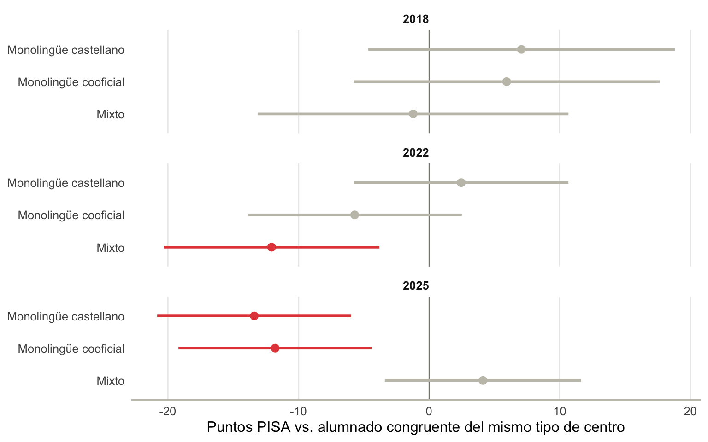
6 ¿Qué cambia en 2025?
Los capítulos anteriores establecen que el efecto de la incongruencia lingüística no es estable a lo largo de las tres ediciones: en 2018 y 2022 no hay penalización distinguible de cero salvo en los centros “mixto” de 2022; en 2025 aparece, por primera vez, una penalización clara y generalizada. Este capítulo no añade un modelo nuevo – toma los resultados ya ajustados y los mira desde varios ángulos (composición migrante, comunidad autónoma, puntuaciones brutas, colegio individual) para proponer explicaciones plausibles de por qué 2025 es distinto, sin pretender zanjar la cuestión con datos de tres ediciones.
6.1 Cómo se define un centro “monolingüe” o “mixto”
Antes de entrar en los resultados conviene dejar clara la operativización de centro_especializacion, porque buena parte de lo que sigue depende de entenderla bien. La variable no procede de ningún registro administrativo sobre el modelo lingüístico oficial del centro: se calcula, edición a edición, a partir del idioma en que cada alumno evaluado por PISA hizo la prueba (LANGTEST_QQQ). Para cada colegio de la muestra se calcula qué idioma es mayoritario entre sus alumnos evaluados y qué proporción representa:
- Si el castellano concentra el 90% o más de los alumnos evaluados, el centro se clasifica como monolingüe castellano.
- Si una lengua cooficial concentra el 90% o más, se clasifica como monolingüe cooficial.
- Si ningún idioma llega al 90% – hay una mezcla real de alumnado evaluado en castellano y en lengua cooficial –, el centro se clasifica como mixto.
Dos consecuencias importantes de esta forma de operativizar la variable, que conviene tener presentes en todo el capítulo. Primera: es una clasificación de la muestra evaluada en cada edición, no del centro en sí – un mismo colegio podría, en principio, cambiar de categoría de una edición a otra sin que haya cambiado su proyecto lingüístico real, simplemente porque la composición de los alumnos de 15 años evaluados ese año fue distinta. Segunda: PISA no reutiliza los mismos centros en cada ciclo (no es un panel), así que “monolingüe cooficial” en 2018 y “monolingüe cooficial” en 2025 no son, en general, el mismo conjunto de colegios. Esto es especialmente relevante para el País Vasco, como se ve más abajo.
6.2 El giro de 2025
La Figura 6.1 resume el hallazgo central: el efecto total de la incongruencia lingüística dentro de cada tipo de centro, con intervalo de confianza correcto (combinación lineal de la posterior conjunta de INLA, no una suma a mano de coeficientes).
En 2025 la penalización es clara en los dos tipos de centro monolingüe (castellano y cooficial), y dentro de márgenes de incertidumbre amplios “mixto” es el único que no penaliza. Esto no es solo un efecto de la congruencia individual: la Figura 6.2 muestra que el tipo de centro en sí mismo (más allá de si el alumno concreto es congruente o no) ha ido perdiendo la ventaja relativa que tenía en 2018 frente al centro monolingüe castellano, hasta volverse una penalización clara en 2025 para “mixto”.
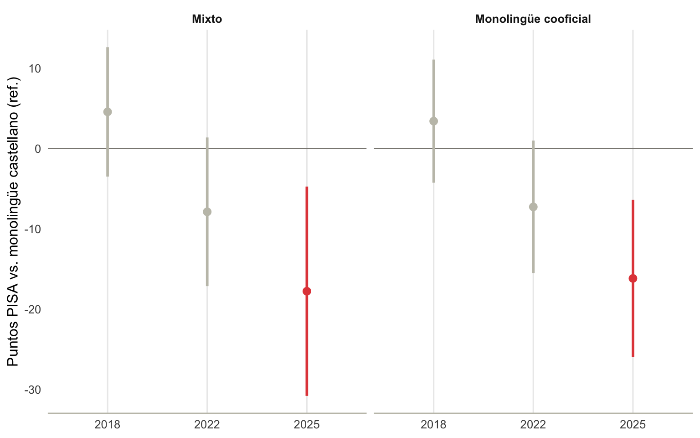
Dos resultados que aparecen a la vez – la incongruencia empieza a penalizar y el tipo de centro por sí solo empieza a penalizar – piden explicación. Las siguientes secciones exploran dos candidatas que no son excluyentes entre sí: el cambio en la composición migrante del alumnado, y el reordenamiento de qué colegios caen en cada categoría dentro de cada CCAA.
6.3 El efecto migrante
El alumnado de origen migrante (primera o segunda generación) ha crecido de forma sostenida en las 5 CCAA bilingües: del 12,8% en 2018 al 18,3% en 2022 y al 23,1% en 2025 – casi se duplica en siete años. Este dato por sí solo ya es relevante para interpretar 2025, porque immig entra en el modelo como covariable propia (ver el capítulo de Métodos): si su efecto es negativo y su peso en la muestra crece, una parte de lo que el modelo atribuye a variables específicas de 2025 puede estar mediado por este cambio de composición.
| Efecto de origen migrante, ajustado por el resto del modelo | ||
| Año | Categoría (vs. nativo) | Puntos PISA (IC95%) |
|---|---|---|
| 2018 | immigprimera_gen | -33.6 [-48.0, -19.2] |
| 2018 | immigsegunda_gen | -11.6 [-25.9, +2.7] |
| 2022 | immigprimera_gen | -22.8 [-32.9, -12.7] |
| 2022 | immigsegunda_gen | -10.0 [-20.0, +0.0] |
| 2025 | immigprimera_gen | -36.3 [-45.3, -27.2] |
| 2025 | immigsegunda_gen | -15.6 [-24.5, -6.7] |
Pero el crecimiento migrante no es uniforme – ni entre CCAA ni dentro de cada tipo de centro, y esa heterogeneidad es la pista más concreta que ofrece este análisis.
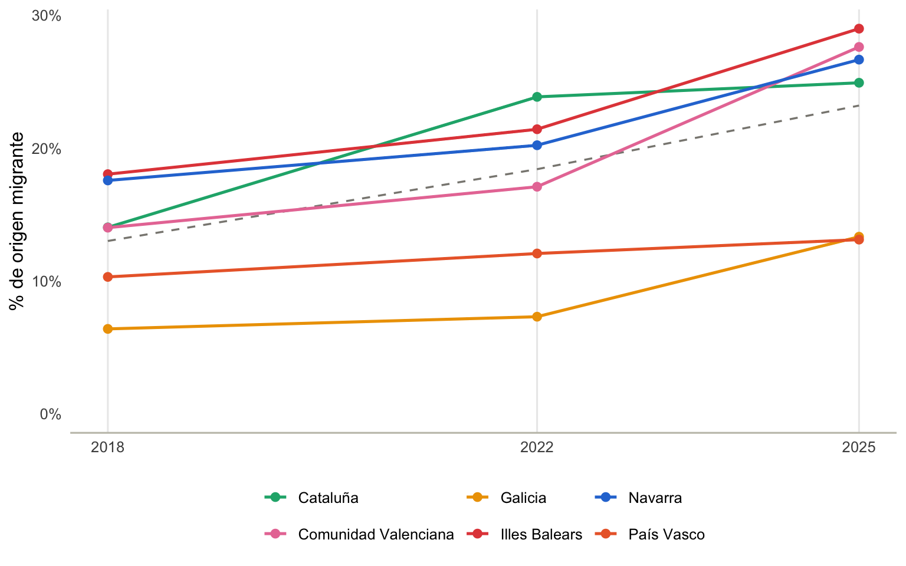
Comunidad Valenciana e Illes Balears son las que más crecen (del 14% al 27,6% y del 18% al 29% respectivamente); Galicia y País Vasco se mantienen comparativamente bajos (13,3% y 13,1% en 2025). Esta heterogeneidad por CCAA es justo lo que hace que “año 2025” y “composición migrante” no sean intercambiables como explicación: si fuera solo un efecto de calendario, esperaríamos un crecimiento más parejo entre territorios.
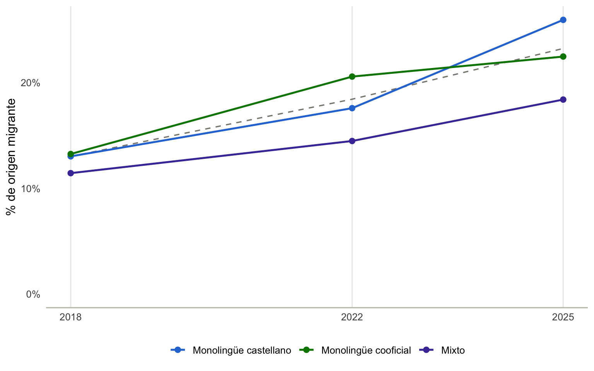
Esta es la pista más directa: en 2018, el centro monolingüe castellano tenía la menor concentración de alumnado migrante de los tres tipos (12,4%); en 2025 tiene la mayor (25,0%), habiéndose duplicado. El centro monolingüe cooficial, en cambio, crece de forma más gradual (13,3% a 22,8%). El centro monolingüe castellano es también, precisamente, el tipo de centro donde la incongruencia se vuelve más negativa en 2025 (Figura 6.1). Esto no demuestra que el efecto de la incongruencia “sea en realidad” el efecto migrante – el modelo ya ajusta por immig como covariable principal – pero sí sugiere una hipótesis concreta y comprobable en el futuro: si el efecto de immig no varía por tipo de centro (el modelo actual lo asume constante, sin interacción con centro_especializacion), un cambio tan marcado en la concentración migrante dentro de un tipo de centro concreto podría dejar residuo en el coeficiente de incongruencia, que sí correlaciona fuertemente con origen migrante por construcción (el 77% del alumnado con lengua de casa de inmigración es, por definición, incongruente). Contrastar esta hipótesis con rigor requeriría una interacción immig × centro_especializacion explícita en el modelo – una extensión natural, no incluida aquí para no multiplicar de nuevo los términos de interacción sin una razón sólida previa.
6.4 El reordenamiento por CCAA
La mezcla de tipos de centro dentro de cada CCAA tampoco es estable de una edición a otra. La Figura 6.5 lo muestra para las cinco, y la Tabla 6.1 cuantifica el cambio 2022→2025 en cada una.
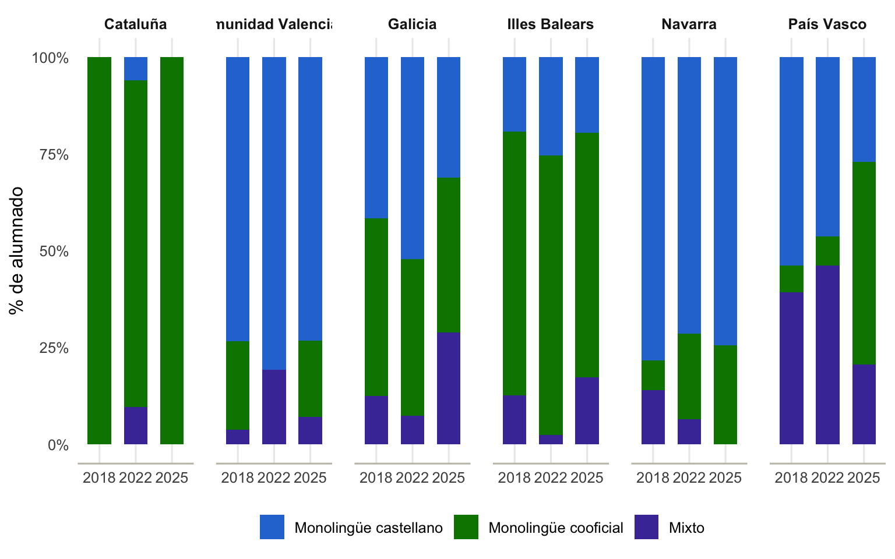
| Cambio en la mezcla de tipo de centro, 2022 → 2025, por CCAA | ||||
| CCAA | Tipo de centro | % alumnado 2022 | % alumnado 2025 | Cambio (pp) |
|---|---|---|---|---|
| Cataluña | Monolingüe castellano | 5.9 | 0.0 | -5.9 |
| Cataluña | Monolingüe cooficial | 84.5 | 100.0 | 15.5 |
| Cataluña | Mixto | 9.6 | 0.0 | -9.6 |
| Comunidad Valenciana | Monolingüe castellano | 80.8 | 73.2 | -7.6 |
| Comunidad Valenciana | Monolingüe cooficial | 0.0 | 19.8 | 19.8 |
| Comunidad Valenciana | Mixto | 19.2 | 7.0 | -12.2 |
| Galicia | Monolingüe castellano | 52.2 | 31.1 | -21.1 |
| Galicia | Monolingüe cooficial | 40.5 | 40.0 | -0.6 |
| Galicia | Mixto | 7.3 | 29.0 | 21.7 |
| Illes Balears | Monolingüe castellano | 25.3 | 19.5 | -5.8 |
| Illes Balears | Monolingüe cooficial | 72.3 | 63.2 | -9.1 |
| Illes Balears | Mixto | 2.4 | 17.3 | 14.9 |
| Navarra | Monolingüe castellano | 71.4 | 74.4 | 3.0 |
| Navarra | Monolingüe cooficial | 22.2 | 25.6 | 3.4 |
| Navarra | Mixto | 6.4 | 0.0 | -6.4 |
| País Vasco | Monolingüe castellano | 46.3 | 27.0 | -19.4 |
| País Vasco | Monolingüe cooficial | 7.4 | 52.4 | 45.0 |
| País Vasco | Mixto | 46.2 | 20.6 | -25.7 |
El caso del País Vasco es el más llamativo con diferencia: el porcentaje de alumnado evaluado en un centro que la muestra clasifica como monolingüe castellano cae del 46% al 27%; el que cae en monolingüe cooficial sube del 7% al 52%; el de “mixto” baja del 46% al 21%. Es un giro completo en apenas una edición. Como se explicó en la sección de operativización, esto casi con toda seguridad no refleja un cambio real en el modelo lingüístico de los centros vascos en tres años – el sistema educativo vasco (modelos A/B/D) cambia mucho más despacio – sino una combinación de qué colegios entraron en la muestra PISA de cada ciclo y de dónde cae, para cada uno, el umbral del 90% que define la categoría.
Pero conviene no generalizar el caso vasco al resto: no es el mismo patrón en las cinco CCAA. Cataluña y Comunidad Valenciana se mueven en la misma dirección que País Vasco – más alumnado en centros monolingües cooficiales, menos en “mixto” –, aunque con mucho menos recorrido. Galicia e Illes Balears hacen justo lo contrario en cuanto al destino del cambio: pierden peso en monolingüe castellano (-21 pp en Galicia, -6 pp en Baleares) pero ese alumnado no pasa mayoritariamente a monolingüe cooficial, sino a “mixto” (+22 pp en Galicia, +15 pp en Baleares) – justo la categoría que en el País Vasco pierde peso. Es decir, el reordenamiento muestral de 2025 es real y generalizado, pero su dirección no es uniforme: unas CCAA convergen hacia más segregación lingüística aparente por centro, otras hacia más mezcla. Esto es un argumento adicional para no interpretar el efecto agregado de centro_especializacion en 2025 (Figura 6.2) como si reflejara una dinámica única y común a las cinco CCAA bilingües.
6.5 Contraste con las puntuaciones brutas
Todo lo anterior son coeficientes ajustados. Para no perder de vista los datos que hay detrás, la Figura 6.6 muestra la puntuación media bruta (sin ajustar por composición), congruente frente a incongruente, por tipo de centro y edición.
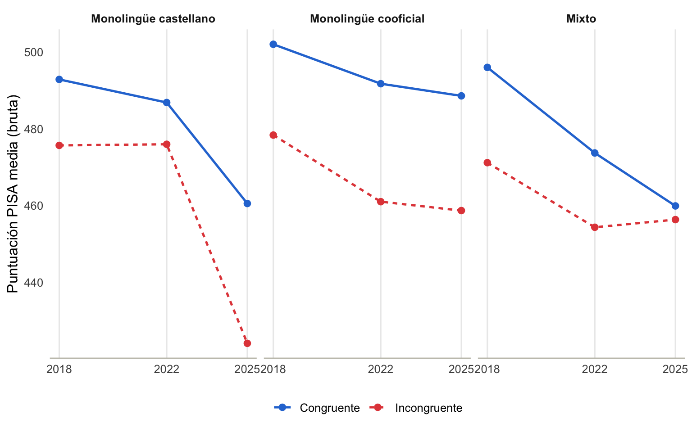
El patrón bruto es coherente con el ajustado, con un matiz relevante en “mixto”: la brecha congruente-incongruente en centros monolingües castellano se amplía claramente hacia 2025 (la incongruente cae más que la congruente), y en “mixto” ocurre lo contrario – la brecha prácticamente se cierra, porque la puntuación congruente cae más que la incongruente. Es exactamente el patrón que muestra el modelo ajustado, y confirma que el hallazgo no es un artefacto de cómo se ajustan las covariables.
6.6 ¿En qué nivel pesa más la desigualdad?
Con los tres niveles del modelo disponibles (estrato interseccional, colegio, CCAA), la Figura 6.7 los pone lado a lado.
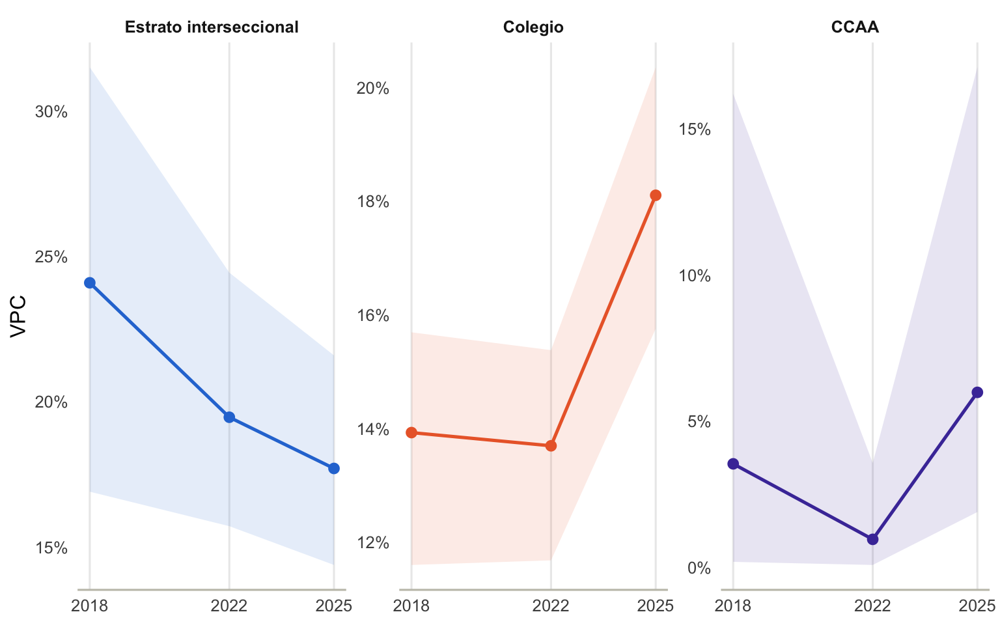
El estrato interseccional (posición social y lingüística del alumnado) sigue siendo, con diferencia, el nivel que más organiza la desigualdad (19%-24%). El colegio se mantiene notablemente estable (14%-15%). El nivel que más cambia es la CCAA: del 2,5% en 2018 al 1,4% en 2022 (con un intervalo tan ancho que tocaba el 0, ver limitaciones) al 5,7% en 2025 – esta vez con un intervalo claramente por encima de 0. Es la confirmación cuantitativa, a nivel de varianza total, de lo que las figuras anteriores muestran cualitativamente: en 2025 importa más que antes en qué CCAA concreta está un alumno, y eso es coherente con el reordenamiento de tipos de centro visto más arriba, ya que la mezcla de tipo de centro es justamente una de las cosas que distingue a una CCAA de otra.
6.7 Colegios que se salen del patrón: ranking MAIHDA
Más allá del efecto medio por tipo de centro, R/04_colegios_interaccion_congruencia.R ajusta una pendiente aleatoria propia de cada colegio para la incongruencia lingüística, sobre todos los efectos fijos ya establecidos. Un colegio con pendiente positiva es uno donde el alumnado incongruente rinde mejor de lo que predice su tipo de centro; uno con pendiente negativa, peor. El color de la Figura 6.8 marca el tipo de centro, no la significación (que ya es visible directamente en el gráfico: un intervalo que no cruza el cero) – para que se vea de un vistazo si cada tipo de centro ocupa una zona propia del ranking o si, por el contrario, los tres tipos están mezclados a lo largo de todo el recorrido.
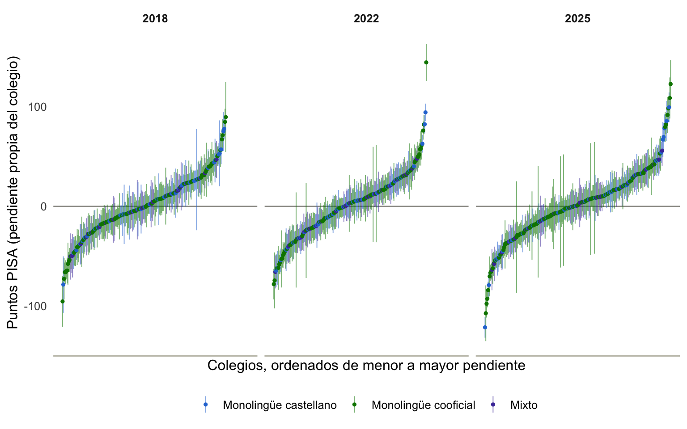
| Colegios por tipo de centro y significación de la pendiente (tres ediciones, >= 5 alumnos incongruentes) | |||
| Tipo de centro | Pendiente positiva | No significativa | Pendiente negativa |
|---|---|---|---|
| Monolingüe castellano | 61 | 54 | 42 |
| Monolingüe cooficial | 125 | 139 | 128 |
| Mixto | 25 | 48 | 32 |
Los tres tipos de centro están mezclados a lo largo de todo el recorrido del ranking, en las tres ediciones: no hay una zona del gráfico que sea “solo cooficial” o “solo castellano”. Contando colegios de las tres ediciones juntas, los monolingües cooficiales tienen 125 con pendiente positiva significativa y 128 con pendiente negativa significativa – prácticamente empatados –, y los monolingües castellano 61 positivos frente a 42 negativos. Ningún tipo de centro concentra el patrón en una sola dirección: dentro de cada tipo hay colegios que claramente amortiguan la incongruencia lingüística y colegios que claramente la agravan, en número comparable. Un mensaje que atribuya el resultado de 2025 a un único modelo lingüístico de centro no encaja con esta heterogeneidad.
Una corrección honesta respecto a una lectura anterior de este mismo ranking: no es una historia de un puñado de “colegios ejemplares” frente a la mayoría. En 2025, 74 colegios tienen pendiente positiva significativa y 66 pendiente negativa significativa, de 214 con suficientes alumnos incongruentes para estimarla con algo de precisión. Eso es muchos más de los que cabría esperar solo por azar con un intervalo al 95% (en torno al 2,5% en cada dirección si no hubiera heterogeneidad real), así que la heterogeneidad entre colegios es genuina – pero es heterogeneidad en ambos sentidos, no solo “buenas prácticas” por descubrir. Los colegios en los extremos del ranking (con pendientes de 80-140 puntos en cualquiera de las dos direcciones) tienen, casi todos, un número reducido de alumnos incongruentes (5-40): conviene tratar el orden exacto del top-1 al top-5 como hipótesis para explorar caso por caso, no como conclusión cerrada – el hallazgo robusto es el conteo agregado de colegios significativos, no el ranking puntual.
6.9 Más allá de las medias: distribución completa y ranking con incertidumbre
Todo lo anterior compara medias – ajustadas o brutas – entre tipos de centro, CCAA y ediciones. Es exactamente el tipo de comparación que alimenta el debate público (“la CCAA X sube o baja puestos en el ranking”), y es también, según el marco que proponen Merlo, Kaufman y Leckie para MAIHDA (Merlo et al. 2026), una comparación que por sí sola puede llevar a error: dos distribuciones con medias distintas pueden solaparse casi por completo, y esa superposición – lo que los autores llaman efecto de contexto general (GCE), frente a los efectos contextuales específicos (SCE) de las diferencias de medias – no se ve en una tabla de medias. La Figura 6.7 del apartado anterior ya mostraba la evolución del VPC por CCAA una vez ajustado el modelo completo; esta sección la complementa con dos cosas que ese modelo ajustado no muestra directamente: la distribución completa de puntuaciones (no solo su media) y un ICC crudo, sin ajustar por composición del alumnado, como medida descriptiva independiente del modelo – el GCE “en bruto”.
6.9.1 Las seis CCAA bilingües: distribución completa por edición
Resumen: estas tres figuras muestran la distribución completa de puntuaciones (no solo la media) por CCAA bilingüe y edición, sin ajustar por composición del alumnado – un contraste descriptivo del modelo MAIHDA ajustado, no una alternativa a él. Tres cifras guían la lectura: el ICC no ajustado por CCAA se mantiene bajo (1,5% -> 1,1% -> 3,1%, 2018-2025) – el territorio explica poco de la varianza total; la dispersión dentro de cada CCAA sí ha crecido (SD conjunta +10,1%, concentrado en Ciencias); y los intervalos de confianza de la media (bootstrap por colegio) muestran que buena parte de las diferencias entre CCAA bilingües no son estadísticamente distinguibles entre sí.
La Figura 6.10, la Figura 6.11 y la Figura 6.12 muestran, para cada CCAA bilingüe y cada edición, la distribución completa de puntuaciones (violín), su mediana y rango intercuartílico (caja) y su media con intervalo de confianza al 95% (rombo rojo, bootstrap por colegio con 500 réplicas – ver nota metodológica sobre csranks más abajo).
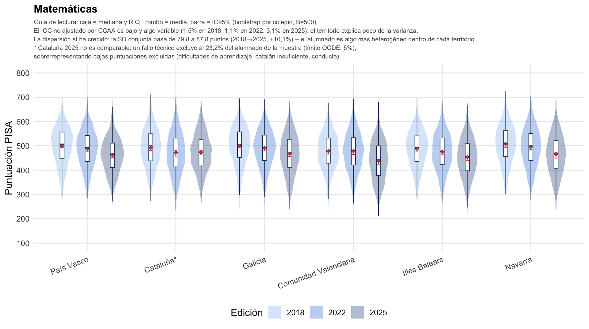
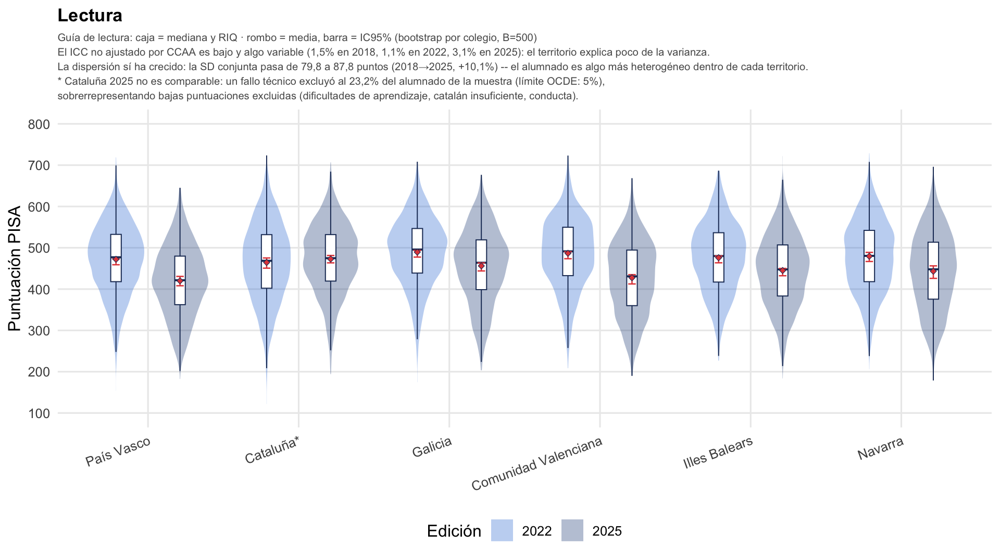
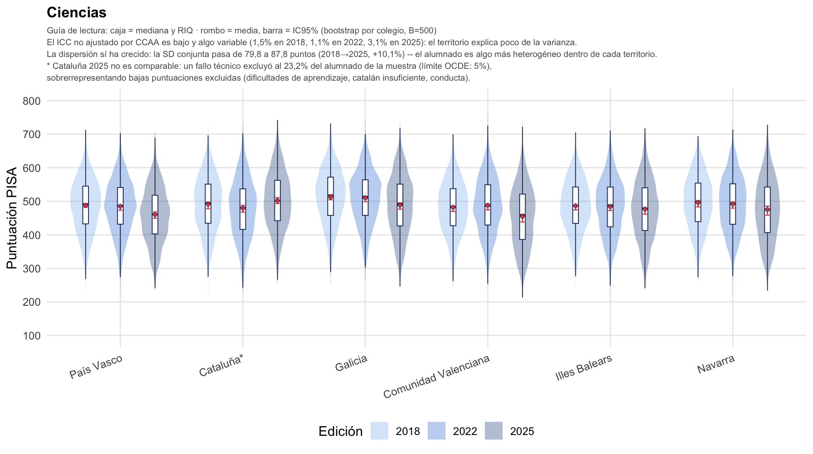
Dos lecturas surgen de estas tres figuras, y ninguna de las dos se ve en una tabla de medias. Primero: el territorio explica poco de la varianza total, y eso no cambia de forma sostenida entre 2018 y 2025. El ICC no ajustado por CCAA – la fracción de la varianza total que separa unas CCAA de otras, sin controlar nada más – es del 1,5% en 2018, 1,1% en 2022 y 3,1% en 2025: sube en la última edición, pero sigue siendo pequeño frente a lo que queda dentro de cada CCAA. El ICC por tipo de centro (monolingüe castellano / cooficial / mixto) es todavía menor y más inestable (0,1%, 1,6% y 0,4%). Esto es coherente, en magnitud, con el VPC ajustado de la Figura 6.7 para el nivel CCAA – las dos medidas no son directamente comparables (una está ajustada por composición y ponderada por diseño muestral, la otra no), pero apuntan en la misma dirección: la CCAA en la que está escolarizado un alumno pesa mucho menos que su posición individual dentro de esa CCAA.
Segundo: la dispersión dentro de cada CCAA ha crecido, y se puede cuantificar. La desviación típica ponderada conjunta (las tres pruebas juntas) pasa de 79,8 puntos en 2018 a 87,8 en 2025 – un incremento del 10,1%, con la mayor parte de la subida ya presente en 2022 (85,2). El patrón no es igual en los tres dominios: en Matemáticas la dispersión prácticamente no cambia (78,1 -> 81,2 -> 80,6); en Ciencias crece con claridad (81,4 -> 84,5 -> 90,1, +10,7% entre 2018 y 2025); en Lectura (solo 2022-2025) también sube, aunque poco (89,3 -> 89,8). El aumento de dispersión no es, por tanto, un fenómeno uniforme entre pruebas – está concentrado sobre todo en Ciencias.
6.9.2 España entera: dónde caen las seis CCAA bilingües en el ranking nacional
Resumen ejecutivo: estas figuras sitúan a las seis CCAA bilingües dentro de la distribución completa y sin ajustar de las 19 unidades territoriales de España (17 CCAA + Ceuta + Melilla), en 2022 y 2025. Tres lecturas antes de entrar en el detalle: (1) son distribuciones brutas – ni ajustadas por composición del alumnado ni ponderadas por diseño muestral en el sentido del modelo MAIHDA – pensadas como contraste descriptivo; (2) el ICC no ajustado por territorio es, como cabía esperar de una España más heterogénea, mayor que entre las seis bilingües solas (7,8% en 2022 -> 6,1% en 2025), pero no sube de una edición a otra; (3) la posición en el ranking viene acompañada de un intervalo de confianza (bootstrap por colegio, B = 500) que en la mitad superior de la tabla suele solaparse entre territorios contiguos – el puesto exacto suele ser menos informativo que la franja (cabeza, mitad, cola). Cataluña en 2025 es la excepción que rompe esta lectura, por un motivo muestral y no estadístico – ver la nota más abajo.
Las seis CCAA bilingües no existen en el vacío: la Figura 6.13, Figura 6.14 y Figura 6.15 las sitúan (en color) dentro de la distribución completa de las 17 CCAA de España más Ceuta y Melilla (en gris), en las dos ediciones en las que el proyecto hermano pisa-espana-ccaa solapa con este (2022 y 2025 – no hay microdatos de 2018 con CCAA como unidad para todo el territorio). La etiqueta sobre cada distribución da la posición en el ranking nacional ese año y, entre paréntesis, su intervalo de incertidumbre al 95% – el equivalente, calculado por bootstrap por colegio (B = 500 réplicas), a lo que ofrecería el paquete csranks para inferencia sobre rankings .
el paquete no pudo instalarse en el entorno usado para preparar esta sección por una restricción de red del proveedor de nube; si se dispone de
csranks puede sustituirse aquí sin cambiar el resto del capítulo, comparando resultados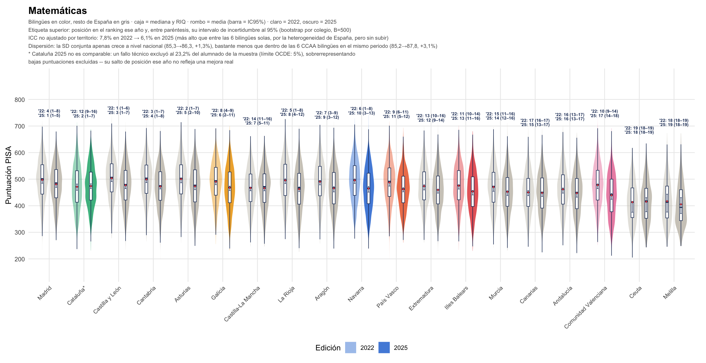
Warning: Removed 2 rows containing non-finite outside the scale range
(`stat_ydensity()`).Warning: Removed 2 rows containing non-finite outside the scale range
(`stat_boxplot()`).Warning: Removed 2 rows containing non-finite outside the scale range
(`stat_summary()`).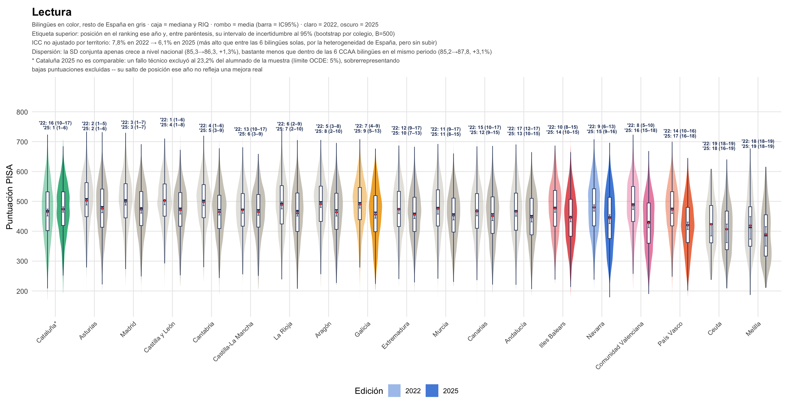
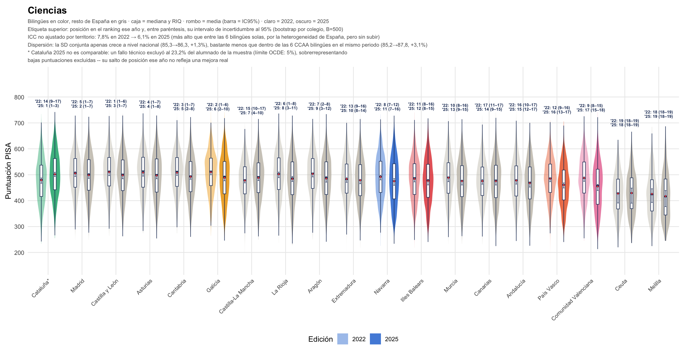
A escala nacional el ICC no ajustado por CCAA es mayor que entre las seis bilingües solas (7,8% en 2022, 6,1% en 2025 – lógico, España entera es más heterogénea que seis territorios elegidos por compartir lengua cooficial), pero tampoco sube de 2022 a 2025; baja ligeramente. Y la dispersión conjunta a nivel nacional apenas crece (85,3 a 86,3 puntos, +1,3%), bastante menos que el +3,1% ya visto entre 2022 y 2025 dentro de las seis CCAA bilingües. Dicho de otro modo: el territorio pesa poco en España en su conjunto, y el aumento de heterogeneidad interna que se observa en las bilingües entre 2022 y 2025 no tiene un reflejo equivalente a escala nacional.
Sobre el ranking en sí – el centro del debate público –, el ejemplo más claro es Cataluña en Matemáticas: pasa del puesto 12º en 2022 (IC95%: 9º-16º) al 2º en 2025 (IC95%: 1º-7º). Es un salto real en la media observada, pero el intervalo de 2025 se solapa con el de Madrid (1º, IC95%: 1º-5º), Castilla y León (3º, IC95%: 1º-7º) y varias más: entre las siete u ocho primeras posiciones de 2025 las diferencias no son, en su mayoría, estadísticamente distinguibles entre sí una vez se tiene en cuenta la incertidumbre muestral – el número de orden exacto (“2º” frente a “5º”) es menos informativo de lo que parece a primera vista. Ceuta y Melilla, con las muestras más pequeñas del conjunto, tienen sistemáticamente los intervalos más anchos (18º-19º en ambas ediciones, sin solaparse con el resto): su posición en la cola baja es la única que el bootstrap deja sin ambigüedad.
Cataluña en 2025 merece, además, una nota aparte, porque su salto de posición está distorsionado por un problema de muestra, no solo por incertidumbre estadística ordinaria: un fallo técnico en las instrucciones del Departament d’Educació a los centros llevó a excluir del examen al 23,2% del alumnado de la muestra original catalana (591 de unos 2.500 estudiantes) – muy por encima del límite del 5% que fija la OCDE para que un territorio se considere comparable. El alumnado excluido fue desproporcionadamente el de necesidades educativas especiales, competencia insuficiente en catalán o dificultades de aprendizaje, perfiles que en conjunto tienden a puntuar más bajo, así que la exclusión probablemente infla la puntuación media observada de Cataluña en 2025 al margen de cualquier cambio real. La propia OCDE excluyó a Cataluña del ranking oficial de PISA 2025 por este motivo y marcó sus resultados como no comparables, aunque los mantuvo en las estadísticas agregadas – de ahí el asterisco en las figuras de esta sección. El salto del puesto 12º al 2º en Matemáticas, en concreto, no debería leerse como una mejora real del sistema educativo catalán entre 2022 y 2025.
6.9.3 En cifras: ICC y dispersión, 2018-2025
| Evolución del ICC no ajustado (efecto de contexto general crudo) | |||
| Fracción de la varianza total entre grupos, sin controlar composición ni diseño muestral | |||
| ICC no ajustado, por nivel | 2018 | 2022 | 2025 |
|---|---|---|---|
| CCAA (6 bilingües) | 1.5% | 1.1% | 3.1% |
| Tipo de centro (6 bilingües) | 0.1% | 1.6% | 0.4% |
| CCAA (España, 19 unidades) | NA | 7.8% | 6.1% |
Ningún elemento de esta sección sustituye al modelo ajustado de los capítulos anteriores – el ICC aquí mostrado es deliberadamente crudo, sin ponderar ni controlar nada, precisamente para servir de contraste descriptivo independiente. Lo que añade a la discusión sobre medias es concreto: el territorio (CCAA) organiza una fracción pequeña y no claramente creciente de la varianza total, tanto entre las seis bilingües como en España entera; la dispersión dentro de cada territorio sí ha crecido en las CCAA bilingües entre 2018 y 2025 – sobre todo en Ciencias –, más de lo que crece a escala nacional en el mismo periodo; y las diferencias de posición en el ranking que alimentan el debate público vienen, en varios casos, con una incertidumbre lo bastante grande como para que el orden exacto sea menos informativo que la posición aproximada (cabeza, mitad o cola de la distribución).
6.10 Síntesis
Ningún elemento de este capítulo prueba, por sí solo, qué explica el giro de 2025 – con tres ediciones y un rediseño de la variable de congruencia a mitad de proyecto, cualquier conclusión causal sería prematura. Lo que sí ofrece es una lectura convergente: el alumnado de origen migrante casi se duplica en el conjunto de las 5 CCAA entre 2018 y 2025, ese crecimiento es más marcado precisamente dentro de los centros monolingües castellano (donde la incongruencia pasa a penalizar con más fuerza), la mezcla de tipos de centro dentro de cada CCAA se reordena de forma sustancial (sobre todo en País Vasco), y la varianza organizada por CCAA se dispara en 2025 justo cuando ese reordenamiento ocurre. Las puntuaciones brutas, sin ningún ajuste, muestran el mismo patrón que el modelo. Y a nivel de colegio individual, hay heterogeneidad real y sustancial en ambas direcciones más allá del tipo de centro. La hipótesis más concreta que se puede formular con esto – que el efecto de incongruencia de 2025 está, al menos en parte, capturando un cambio de composición migrante no completamente absorbido por el efecto principal de immig – es comprobable con una extensión del modelo (interacción immig × centro_especializacion) y queda como línea de trabajo natural, no resuelta aquí.
Merlo, Juan, Jay S. Kaufman, y George Leckie. 2026. «From Averages to Heterogeneity: A Plain-Language Guide to MAIHDA in Epidemiology». International Journal of Social Determinants of Health and Health Services 56. https://doi.org/10.1177/27551938261423042.